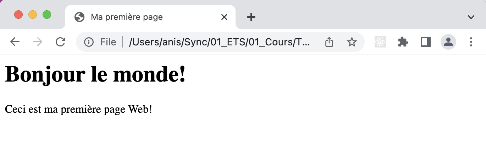
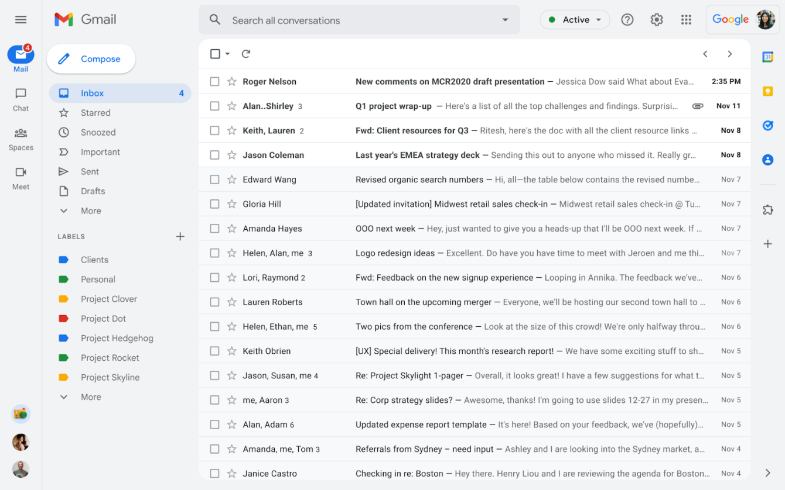
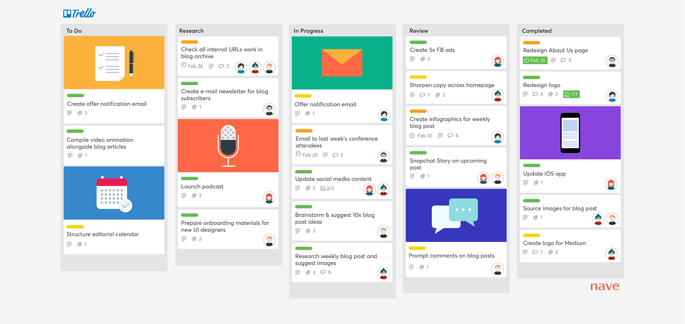
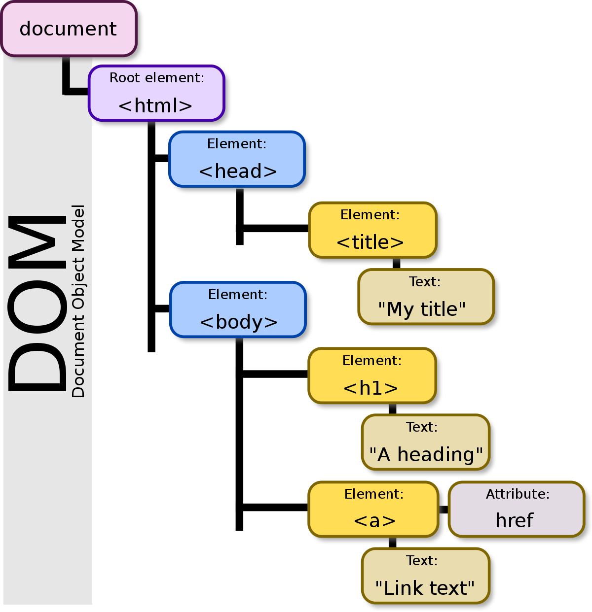

TCH056 - Programmation Web
Chapitre 01: Introduction
Anis Boubaker, Ph.D.
Maitre d'enseignement en informatique
Plan de la séance
- Qu’est-ce qu'application/site Web?
- Bref historique du Web
- Les technologies et les langages du Web
- Démonstration: TCH056 en 10mn
Définitions: Qu'est-ce que le développement Web?
Définition: Développement Web
L'ensemble des tâches nécessaires à la conception, le développement et la mise en place de sites Web. Le développement web peut aller du développement d'une simple page texte statique à des applications Web complexes, aux sites de commerce électronique ou de réseaux sociaux. Source: Wikipedia

Définition: Page Web
Document pouvant être interprété et affiché par un navigateur.
<html>
<head><title>Ma première page</title></head>
<body>
Bonjour le monde!
Ceci est ma première page Web!
</body>
</html>
Définition: Page Web
Document pouvant être interprété et affiché par un navigateur.

Page Web: Document interprété par le navigateur
- La structure du document est définie dans le langage de balisage HTML
<html>
<head><title>Ma première page</title></head>
<body>
Bonjour le monde!
Ceci est ma première page Web!
</body>
</html>
Page Web: Document interprété par le navigateur
- La structure du document est définie dans le langage de balisage HTML
- Les aspects visuels du document sont codés dans un langage déclaratif: le CSS
.fancy {
font-weight: bold;
text-shadow: 4px 4px 3px #77f;
}
Page Web: Document interprété par le navigateur
- La structure du document est définie dans le langage de balisage HTML
- Les aspects visuels du document sont codés dans un langage déclaratif: le CSS
- Les aspects dynamiques (réaction aux évévements, modification du contenu de la page, etc.) sont codés dans un langage de programmation: le Javascript.
function toCelsius(fahrenheit) {
return (5/9) * (fahrenheit-32);
}
document.getElementById("temp").innerHTML = toCelsius(77);
Définition: Site Web
Un ensemble de pages web et de ressources reliées par des hyperliens, défini et accessible par une adresse web. Souce: Wikipedia
Définition: Application Web
Une application manipulable directement en ligne grâce à un navigateur web et qui ne nécessite donc pas d'installation sur les machines clientes. Souce: Wikipedia



Comment ça marche?
Bref historique...
Historique du Web
Internet
Historique du Web
- Histoire d'Internet
- L'évolution des navigateurs
- L'évolution de la conception Web (graphique)
- Rétrospective assez complète (sarcastique/humouristique, un peu trop en faveur de MS)
Anatomie d'une WebApp
Côté-client:
- HTML/DOM
- CSS
- JavaScript
- Ressources statiques
- “Navigateur” (qui fournit certains services)
Côté-serveur:
- Infrastructure serveur web (Apache, IIS, NodeJs, etc.)
- Code côté-serveur: JavaScript, PHP, ou autre langage/plate-forme
HTML (Hyper-Text Markup Language)
- Décrire la structure et le contenu de la page initiale
- Contient des pointeurs vers du code JavaScript (e.g., balises <script>)
- Est récupéré par le navigateur, analysé, puis converti sous forme d'arbre (DOM)
DOM (Document Object Model)

- Structure et API permettant l'intéraction avec la page
- Peut être lu et modifié par le code JavaScript
- Les modifications au DOM sont rendues par le navigateurs
CSS (Cascading Style Sheets)
- Séparation du contenu de la page de sa présentation
- Ensemble de règles déclaratives:
- Élément(s) visé(s) (“target”) à gauche
- Actions à droite
- Uniformisation par l'application de règles à tous éléments de la page dans le DOM
JavaScript
- Langage de premier plan pour les applications web modernes
- Permet l'intéractivité des applications web
- Exécuté lorsqu'une balise <script> est détectée, ou lorsque des événements du DOM sont déclenchés
- Est un langage de programmation complet avec plusieurs fonctionnalités avancées (des bonnes et des mauvaises!)
Technologies côté serveur
- Répondent aux requêtes HTTP (et AJAX), agnostique au langage
- Logiciel ou cadriciel qui intercepte les requêtes (Apache, IIS, Node.js, Django, etc.
- Langages typiquement utilisés: Java, .Net, RoR, PHP, Python, JS
- JS est de plus en plus populaire (dev full stack)
Maintenance de l'état
- Fichiers témoins (Cookies)
- Stockage local persistant (HTML5)
- Base de données et mécanismes de stockage côté serveur
Le langage de balisage HTML
HTML?

- Hyper Text Markup Language
- Langage qui décrit le contenu d'un document hérarchiquement en vue de son affichage
- Le contenu est décrit à l'aide de balises ("tags") - Exemple: ceci est un titre, un paragraphe, etc.
- Les balises ne décrivent - idéalement - que la sémantique (souvent pas vrai!)
Les balises (tags)
Un héritage du XML (XHTML), pour qu'une balide soit bien formée:
- Une balise ouvrante et une balise fermante:
- Une balise vide (pas de contenu):
- Une balise vide (retro-compatibilité):
Une balise comprend...
Un type tel que défini par la spécification HTML5
(ex.: p, div, nav, span, etc. )
<nom_balise prop1="valeur" prop2="valeur"> ...Contenu...</nom_balise>
Une balise comprend...
Des propriétés (optionnelles) selon le type de balise
<nom_balise prop1="valeur" prop2="valeur"> ...Contenu...</nom_balise>
Une balise comprend...
Du contenu (optionnel) - Texte ou hiérarchie de balises
<nom_balise prop1="valeur" prop2="valeur"> ...Contenu...</nom_balise>
Un premier exemple
La racine du document
Les balises <html>...</html> encapsulent le document
L'entête (head)
Comprend des méta-données sur la page
Le corps du document (body)
Le contenu effectif du document (entre autres)
Principales balises (Démonstration)
Références
- Référence officielle du langage HTML5 (W3C)
- Outil de validation de page HTML5
- Mozilla Developer Network
(excellente documentation en français) - W3School (Référence populaire)
- Séries d'exercices (W3School)
Avant le prochain laboratoire:
- Parcourir la documentation HTML de Mozilla ou W3School
- Lire l'énoncé du laboratoire
- Faire quelques exercices du site W3School (au besoin)